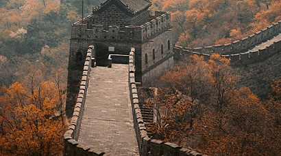

La Gran Muralla China
La Gran muralla China es una antigua fortificación china construida y reconstruida entre el siglo V a. C. y el siglo XVI (Edad Moderna) para proteger la frontera norte del Imperio chino durante las sucesivas dinastías imperiales de los ataques de los nómadas xiongnu de Mongolia y Manchuria.
Contando sus ramificaciones y construcciones secundarias, se calcula que tiene unos 21 200 kilómetros de largo, desde la frontera con Corea, al borde del río Yalu, hasta el desierto de Gobi, a lo largo de un arco que delinea aproximadamente el borde sur de Mongolia Interior, aunque hoy solo se conserva un 30 % de ella. En promedio, mide de 6 a 7 metros de alto y de 4 a 5 metros de ancho.
El 26 de enero de 2007 se dio a conocer que la muralla china fue elegida como una de las ganadoras en la lista de Las Nuevas Siete Maravillas del Mundo Moderno.
Historia
La muralla fue construida para ayudar a mantener alejados a los invasores del norte, como los mongoles. Se habían construido muros más pequeños a lo largo de los años, pero el primer emperador de China, Qin Shi Huang, decidió que quería un único muro gigante para proteger las fronteras del norte, por eso ordenó que se construyera un solo muro fuerte con miles de torres de vigilancia donde los soldados pudieran resguardar y proteger su imperio.
La Gran Muralla original la empezó la dinastía Qin y las siguientes dinastías continuaron trabajando en ella. Más tarde, la dinastía Ming reconstruyó el muro. Gran parte de la Gran Muralla que conocemos hoy en día, fue construida por la dinastía Ming. El muro fue construido por campesinos, esclavos, criminales y otras personas que el emperador decidió castigar. Los soldados participaron en la construcción del muro y en la dirección de los trabajadores. Se estima que millones de personas trabajaron en la muralla en el transcurso de más de 1000 años. Algunos científicos piensan que hasta 1 millón de personas murieron mientras construían el muro.
La muralla era realmente una fortificación para proteger la frontera norte. Era un muro, pero también tenía torres de vigilancia, faros para enviar señales y fortines para alojar soldados. Había soldados que protegían el muro y las torres, también había ciudades construidas a lo largo del muro para que los soldados habitaran allí y pudieran llegar rápidamente a la muralla en caso de que hubiera un ataque. Se estima que más de 1 millón de soldados protegieron la Gran Muralla durante el apogeo de la dinastía Ming.
La Gran Muralla tenía una serie de torres de vigilancia y fuertes que podían albergar soldados, granos y armas. Las torres podían permitir el paso de mensajes rápidamente a lo largo del muro. Se desarrollaron armas especiales para permitir la defensa eficiente del muro, réplicas de las cuales actualmente se exhiben en la Gran Muralla. Se cree que en un momento, como se menciono antes, hubo 1 millón de soldados situados a lo largo del muro.
